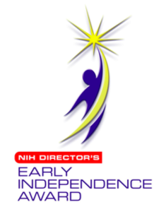
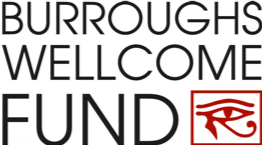
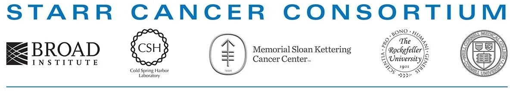

Funding
We are grateful for all of our funding agencies.
The Anna Nam Lab is supported by foundations, institutional programs, and federal research funding that make our work possible.





Funding
The Anna Nam Lab is supported by foundations, institutional programs, and federal research funding that make our work possible.


